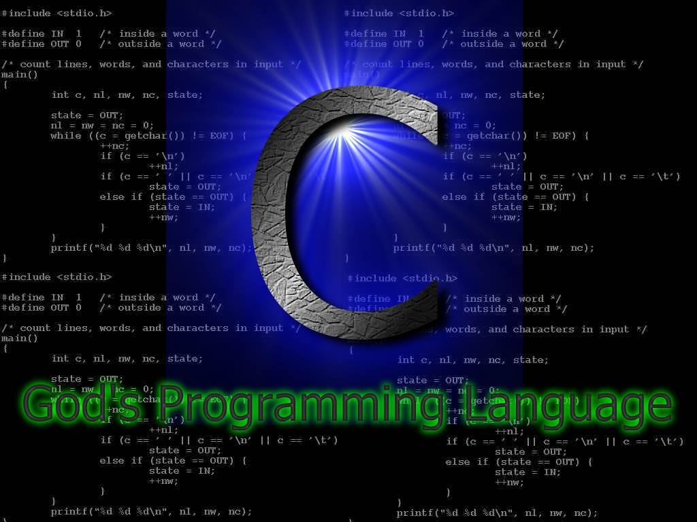
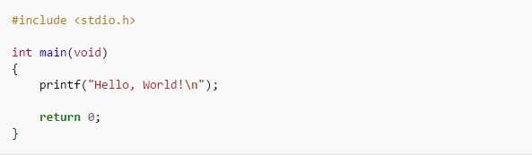

C
C este un limbaj de programare standardizat, compilat, de nivel mediu. Este implementat pe majoritatea platformelor de calcul existente azi, și este cel mai popular limbaj de programare pentru scrierea de software de sistem. Este apreciat pentru eficiența codului obiect pe care îl poate genera, și pentru portabilitatea sa.
A fost dezvoltat la începutul anilor 1970 de Ken Thompson și Dennis Ritchie, care aveau nevoie de un limbaj simplu și portabil pentru scrierea nucleului sistemului de operare UNIX.
Sintaxa limbajului C a stat la baza multor limbaje create ulterior și încă populare azi: C++, Java, JavaScript, C#, D.
C este un limbaj de programare relativ minimalist ce operează în strânsă legătură cu hardware-ul, fiind cel mai apropiat de limbajul de asamblare față de majoritatea celorlalte limbaje de programare.
Scurtă introducere în C
C este prezentat uneori ca "asamblor portabil", făcându-se astfel diferențele principale față de limbajele de asamblare: codul unui program C poate fi compilat și rulat pe aproape orice tip de mașină (calculator), asemănător altor limbaje de programare, în timp ce limbajele de asamblare sunt specifice unui anumit model de mașină. Limbajul C aparține clasei limbajelor de nivel scăzut sau de nivel mediu, aceasta indicând strânsa legătură între interoperabilitate și echipamentul hardware.
C a fost creat având drept scop important de a face ca programele mari să poată fi scrise mai ușor și cu mai puține erori în paradigma programării procedurale, dar fără a pune un obstacole în scrierea compilatorului de C, care este încărcat de caracteristicile complexe ale limbajului. C are urmatoarele caracteristici importante:
- Este un limbaj de bază simplu, cu importante funcționalități cum ar fi funcțiile matematice sau cele de manipulare ale fișierelor
- Este focalizat pe paradigma programării procedurale, care facilitează programarea într-un mod structurat
- Utilizează un set simplu de tipuri de date ce împiedică multe operații neintenționate
- Folosește un limbaj preprocesor, preprocesorul C, pentru sarcini cum ar fi definirea de macrouri și includerea mai multor fișiere sursă
- Permite accesarea la nivel scăzut a memoriei calculatorului prin utilizarea pointerilor
- Permite folosirea parametrilor, care sunt comunicați funcțiilor prin valoare și nu prin referință
- Pointeri la funcții, ce permit forme rudimentare de închidere (engleză closure) și polimorfism
- Declararea variabilelor
- Structuri de date sau tipuri de date agregate, definite de utilizator prin (struct), ce permit ca date înrudite să fie combinate și manipulate ca un întreg
Printre caracteristicile ce lipsesc în C, dar care pot fi găsite în alte limbaje de programare se enumeră:
- Un sistem automat de colectare a reziduurilor (de memorie) (engleză Garbage collection)
- Clasele și obiectele (programarea orientată pe obiecte)
- Un sistem avansat de tipuri de date
- Programarea generică
- Supraîncărcarea
- Metaprogramarea
- Suport nativ pentru programarea multifir (engleză multithreaded) și funcțiile de rețea
- Procesarea listelor
Deși lista minusurilor limbajului C este destul de lungă, aceasta nu reprezintă un dezavantaj suficient de mare pentru inhiba utilizarea limbajului C în practică, deoarece permite ca noi compilatoare să poată fi scrise pe noi tipuri de platforme și pentru că permite programatorului să țină bine sub control programul pe care îl scrie. Acesta este unul din motivele care face ca un cod scris în C să fie mult mai eficient decât dacă ar fi scris în alte limbaje de programare. Numai un cod scris cu foarte mare grijă într-un limbaj de asamblare poate fi mai performant, deoarece are control integral asupra mașinii, dar performanța avansată a compilatoarelor, combinată cu complexitatea noilor tipuri de procesoare, a făcut ca limbajul C să fie preferat și să fie acceptat din ce în ce mai mult de programatori.
Una din consecințele acceptării și eficienței C-ului este aceea că multe compilatoare, biblioteci și interpretoare ale limbajelor de nivel înalt sunt adesea implementate în C.
Un exemplu de program C ("Hello World!")
Următorul exemplu de program a apărut în prima ediție a cărții lui Brian Kernighan și Dennis Ritchie și a devenit un exemplu standard de program introductiv în majoritatea cărților de programare, indiferent de limbajul de programare. Programul afișează „Hello, World!“ la ieșirea standard, care este, de obicei, un terminal sau monitor. Poate să fie, totuși, și un fișier sau alt dispozitiv hardware, depinzând de maparea ieșirii standard în momentul execuției programului.
Programul prezentat mai sus va fi compilat corect de marea majoritate a compilatoarelor moderne. Totuși, va produce unele mesaje de avertizare dacă va fi compilat de un compilator ce respectă standardul ANSI C. Mai mult, codul nu va fi compilat, returnând mesaje de eroare, dacă se respectă standardele C99, deoarece variabila de întors, de tip int, nu va putea fi dedusă dacă nu a fost specificată în codul sursă. Aceste mesaje pot fi eliminate, aducând câteva schimbări minore programului original:
Tipuri de date
C are un sistem de tipuri de date similar cu cel al descendenților ALGOL, cum ar fi Pascal, dar totuși cu anumite diferențe. Cuprinde tipuri de date cum ar fi întregi de diferite dimensiuni, cu sau fără semn, numere în virgulă mobilă, enumerări (enum), structuri de date (struct) și uniuni (union).
C utilizează foarte mult pointerii, un tip de referință foarte simplu, care păstrează adresa locației din memorie. Adresa poate fi manipulată cu ajutorul atribuirilor și a aritmeticii pointerilor. În momentul rulării unui program, un pointer reprezintă o adresă de memorie. În momentul compilării, un pointer este un tip de dată complex, ce reprezintă atât adresa de memorie cât și tipul de dată. Acest lucru permite expresiilor ce utilizează pointeri să fie evaluate după tipul de dată. Pointerii au mai multe utilizări în C. De exemplu, șirurile de caractere (engleză text string) sunt adesea reprezentate printr-un pointer la un vector de caractere. Alocarea dinamică a memoriei este realizată tot cu ajutorul pointerilor.
Un pointer null are o valoare rezervată, indicând faptul că face referire la o locație nevalidă. Acest lucru este folositor în cazuri speciale cum ar fi pointerul next (următorul) în nodul final al unei liste înlănțuite. Dereferențierea unui pointer null poate cauza un comportament imprevizibil al aplicației. De asemenea, există și pointeri de tip void, fapt ce indică referirea la un obiect de tip necunoscut. Acești pointeri sunt foarte folositori în programarea generică. Deoarece dimensiunea și tipul obiectelor la care acest tip de pointeri face referire sunt necunoscute, aceștia nu pot fi dereferențiați, dar pot fi convertiți la alt tip de pointeri.
În C, anterior standardului C99, tablourile (vectorii) sunt de dimensiune fixă, statică, cunoscută la momentul compilării; în practică, acest lucru nu reprezintă o piedică, având în vedere că se pot aloca blocuri de memorie în momentul rulării, tratându-le ca pe tablouri utilizând librăria standard. Spre deosebire de multe alte limbaje de programare, C reprezintă tablourile ca și pe pointeri: o adresă și un tip de dată. Prin urmare, valorile index pot depăși dimensiunea actuală a unui tablou.
De asemenea, C oferă posibilitatea de lucru cu tablouri multidimensionale. Din punct de vedere semantic, tablourile multidimensionale sunt tablouri de tablouri, dar, din punct de vedere fizic, acestea sunt stocate ca un singur tablou unidimensional cu un offset calculat.
C este adesea folosit în programarea de nivel scăzut, unde poate fi necesar ca un întreg să fie tratat ca o adresă de memorie, un număr în virgulă mobilă ca un întreg sau un tip de pointer ca un alt tip de pointer. Pentru astfel de cazuri C oferă operatorul de casting, care forțează explicit conversia unei valori dintr-un tip de dată în alt tip de dată.
Sintaxa
Spre deosebire de alte limbaje de programare cum ar fi Fortran 77, C-ul are o formă liberă, lăsând programatorul să-și organizeze codul folosind spațiile albe. Comentarii pot fi înserate oriunde în cadrul programului utilizând delimitatorii /* și */.
Fiecare fișier sursă conține declarații de variabile și definiții de funcții. Funcțiile, la rândul lor, conțin alte declarații de variabile și comenzi. Declarațiile de variabile fie definesc noi tipuri folosind cuvinte cheie precum struct, union și enum sau atribuind un tip de date predefinite, prin scrierea tipului de dată și urmat de numele variabilei. Cuvinte cheie precum char, int, precum și pointerul la unul din aceste tipuri * reprezintă tipuri de date implementate nativ în C. Secțiuni de cod sunt incluse între paranteze acolade ({ și }), pentru a indica pentru ce porțiune a codului se aplică declarațiile de variabile și celelalte structuri de control.
Comenzile execută acțiuni cum ar fi cele de modificare ale valorii unei variabile sau afișarea unui text la consolă. Structurile de control sunt variabile pentru execuții condiționale sau iterații, realizate cu ajutorul cuvintelor rezervate if, else, switch, do, while și for. Salturi arbitrare sunt posibile prin folosirea cuvântului cheie goto. Cu ajutorul unei varietăți de operatori implementați în C, se pot realiza operații aritmetice, logice, comparative, pe biți, indexarea tablourilor și atribuiri. Comenzile pot de asemenea apela funcții, incluzând un număr mare de funcții din bibliotecile standard ale limbajului C, necesare pentru realizarea diferitelor sarcini cerute de programator.
Vezi și ...
Comparație
Limbajul de programare C++ a fost inițial derivat din C. Totuși, nu absolut orice program scris în C este valid C++. Deoarece C și C++ au evoluat independent, au apărut, din nefericire, o serie de incompatibilități între cele două limbaje de programare.

Cea mai amplă revizie a limbajui C, C99, a creat un număr suplimentar de conflicte. Diferențele fac să fie greu de scris programe și biblioteci care să fie compilate și să ruleze corect în calitate de cod C sau C++, și produce confuzii celor care programează în ambele limbaje. Diferențele fac ca fiecare din cele două limbaje de programare să împrumute din caracteristicile celuilalt limbaj de programare.
Limbaje de programare de viitor
Domeniul IT este unul foarte dinamic, in continua dezvoltare, care ofera numeroase oportunitati de angajare. Pentru a veni in ajutorul tinerilor care isi doresc sa lucreze in domeniul IT, dar si a specialistilor care sunt interesati de evolutia pietei, HiPo.ro a realizat o analiza a tendintelor privind utilizarea diferitelor limbaje de programare.

In prezent, cele mai populare 10 limbaje de programare sunt: Java, C, C++, PHP, C#, Objectiv C, Visual Basic, Python, Perl si Java Script. In graficul de mai jos poti vedea detalii legate de ponderea fiecarui limbaj de programare in ceea ce priveste popularitatea sa in randul specialistilor din domeniul IT din intreaga lume, a locurilor de munca disponibile, precum si a ofertelor de cursuri de specializare.